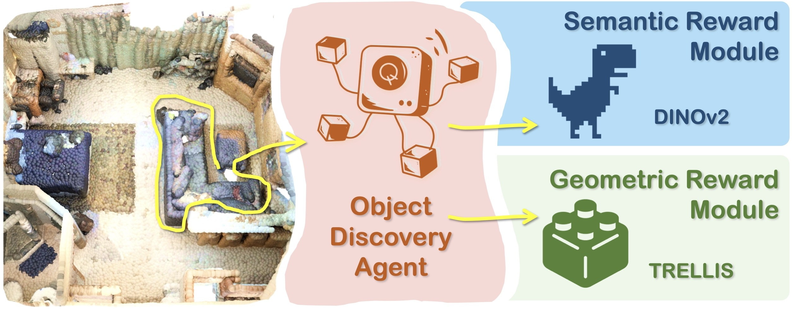

The Hong Kong Polytechnic University
Sep 2024 - Jan 2026
MSc in Information Technology · GPA 4.21 / 4.30 · IELTS 7.0
Research Assistant, vLAR Group · Computer Vision & Robotics
I am a Research Assistant in the vLAR Group at The Hong Kong Polytechnic University. My supervisor is Prof. Bo Yang. My main research interests are Computer Vision and Robotics, with current work on unsupervised 3D instance segmentation and object-centric representation learning. I am currently seeking PhD opportunities.
The Hong Kong Polytechnic University
Sep 2024 - Jan 2026
MSc in Information Technology · GPA 4.21 / 4.30 · IELTS 7.0
Fuzhou University
Sep 2019 - Jun 2023
Bachelor in Software Engineering · GPA 3.71 / 4.00

IEEE/CVF Conference on Computer Vision and Pattern Recognition (CVPR), 2026
First Author

International Conference on Machine Learning (ICML), 2026
[Code: TBD]

IEEE/CVF Conference on Computer Vision and Pattern Recognition (CVPR), 2026
Jan 2026 - Present
The Hong Kong Polytechnic University, vLAR Group · Research Assistant
Jul 2023 - Oct 2023
Fujian Star-net Communication Co., Ltd · Software Engineering R&D
Mar 2022 - Jun 2022
Fujian Star-net Communication Co., Ltd · Software Engineering R&D Intern
DAC 61st, 2024
Global 2nd, GPU Track, DAC System Design Contest 2024 (CCF-A) · Team Leader